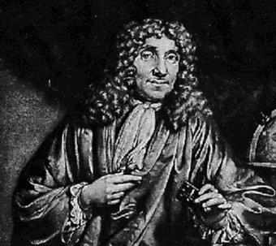

39 ANTONY VAN LEEUWENHOEK
1632-1723
Penemu
kuman Antony van Leeuwenhoek lahir di Delft, Negeri Belanda.
Dia berasal dari famili kalangan tengah dan hampir sepanjang
hidupnya jadi pegawai kotapraja dalam posisi yang tidak
begitu penting.
Penemuan Leeuwenhoek yang besar tak lain akibat hobinya
memicing-micingkan mata lewat kaca mikroskop. Pada saat itu,
tentu saja, orang tidak bisa begitu saja lari ke toko dan
beli mikroskop, karena itu Leeuwenhoek membikinnya sendiri.
Dia samasekali bukan penggosok lensa profesional dan belum
pernah dapat didikan khusus di bidang itu. Meski begitu,
keahlian yang dikembangkan amat luar biasa, jauh melampaui
kebiasaan para profesional pada saat itu.
Kendati perangkat mikroskop sudah ditemukan orang sebelum
Leeuwenhoek lahir, dia tidak menggunakannya. Sebaliknya,
dengan cermat dan tepat dia menggosok lensa berukuran kecil.
Leeuwenhoek mampu menghasilkan mikroskop yang punya daya
kekuatan pengamatan yang jauh lebih baik dari mikroskop yang
sudah ada. Salah satu dari lensa yang masih ada punya
kapasitas membesarkan sekitar 270 kali, bahkan ada pertanda
dia berhasil membuat lebih sempurna dari itu.
Leeuwenhoek punya kesabaran yang amat sangat dan pengamat
yang tekun, punya penglihatan tajam serta rasa ingin tahu
yang tak terhingga. Dengan lensa yang teramat kecil itu dia
meneliti pelbagai macam benda, mulai rambut hingga sperma
anjing, dari titik hujan hingga serangga kecil. Juga serat,
bagian kulit dan macam-macam benda lainnya. Dia membuat
catatan yang teliti dan membuat gambar sketsa terperinci
dari tiap apa saja yang diamatinya.
Terhitung tahun 1673 dan seterusnya, Leeuwenhoek
senantiasa menjalin hubungan dengan "The Royal Society of
England" suatu lembaga ilmiah terkemuka pada jaman itu.
Meskipun dia tak punya latar belakang pendidikan tinggi
(cuma sekolah dasar dan cuma tahu satu bahasa, bahasa
Belanda), dia terpilih jadi anggota lembaga ilmiah itu pada
tahun 1680. Dia juga jadi anggota Akademi Ilmu Pengetahuan
di Paris.
Leeuwenhoek dua kali kawin, punya enam anak tetapi tanpa
cucu. Kesehatannya baik, masih dapat bekerja keras di
akhir-akhir hayatnya. Banyak tokoh kenamaan mengunjunginya,
termasuk Czar Rusia, Peter Yang Agung, dan Ratu Inggris. Dia
menghembuskan nafas penghabisan tahun 1723 juga di Delft
pada umur 90 tahun.
Leeuwenhoek melakukan banyak penemuan penting. Dialah
orang pertama yang menjabarkan spermatozoa (1677), dan
merupakan salah seorang yang mula-mula menjabarkan darah
merah dan darah putih. Dia menentang teori tentang generasi
spontan bentuk sederhana dari kehidupan dan memaparkan
banyak bukti-bukti yang berlawanan dengan itu. Dia mampu
menunjukkan, misalnya, bahwa hewan kecil pemakan darah tak
bersayap berkembang biak dalam cara serupa dengan insekta
bersayap.
Penemuan terbesarnya muncul tahun 1674 tatkala ia membuat
penelitian pertama kali terhadap kuman. Ini merupakan salah
satu penemuan besar tentang cairan sperma yang mengakibatkan
penyuburan dalam sejarah manusia. Di dalam titik air kecil
itu Leeuwenhock menemukan suatu dunia yang sama sekali baru,
sepenuhnya dunia tak terduga, penuh dengan kehidupan. Meski
belum disadarinya, dunia baru ini punya arti amat penting
kepada umat manusia. Sesungguhnya, "benda amat kecil
mikroskopis" itu yang diamatinya sering merupakan faktor
kekuatan penting baik untuk kehidupan maupun kematian
manusia. Sekali sudah ditelitinya, Leeuwenhoek sanggup
menemukan kuman di pelbagai tempat yang berbeda-beda: di
sumur dan di kubangan, di titik air hujan, di mulut dan usus
menuju anus manusia. Dia melukiskan pelbagai bentuk bakteri,
juga protozoa dan menghitung ukurannya.
Penggunaan penemuan besar Leeuwenhoek belum terlaksana
sampai datangnya Pasteur hampir dua abad kemudian. Fakta
menunjukkan, seluruh obyek masalah mikrobiologi praktis tak
ada kegiatan hingga abad ke-19 tatkala mikroskop yang
disempurnakan dikembangkan. Orang mungkin mempertanyakan
andaikata Leeuwenhock tak pernah lahir ke dunia dan
penemuan-penemuannya tak terjadi hingga abad ke- 19, mungkin
saja hanya membuat sedikit perbedaan terhadap kemajuan ilmu
pengetahuan. Tetapi, tak ada bantahan bahwa Leeuwenhoek-lah
yang menemukan kuman, dan melalui dia dunia ilmu pengetahuan
menjadi sadar terhadap kehadirannya.
Leeuwenhoek seringkali dianggap sebagai orang yang karena
nasib baik kebetulan tergelincir pada penemuan ilmiah
penting. Ini samasekali jauh dari kebenaran. Penemuan
mikro-organisme-nya merupakan akibat normal dari pembikinan
mikroskop yang cermat dengan kualitas yang tak ada
bandingannya dengan yang sudah ada masa itu, dan kesabaran
serta ketepatannya selaku peneliti. Dengan kata lain,
penemuannya adalah hasil dari gabungan antara ketrampilan
dan kerja keras, berlawanan dan tak ada sangkut-pautnya
dengan sekedar nasib keberuntungan.
Penemuan kuman ini merupakan suatu penemuan penting
ilmiah yang langka yang dilakukan oleh perseorangan.
Leeuwenhoek betul-betul kerja sendirian. Penemuan protozoa
dan bakterinya tak dapat bantuan siapa pun-tidak demikian
halnya pada sebagian terbesar kemajuan di bidang biologi
--serta bukannya merupakan pertumbuhan wajar dari
pengetahuan biologi sebelumnya. Faktor inilah, bersamaan
dengan arti penting penggunaan penemuannya, yang membuatnya
dapat tempat tinggi dalam urutan daftar buku ini.
Situs Web
- http://www.ucmp.berkeley.edu/history/leeuwenhoek.html
- http://www.bbc.co.uk/history/historic_figures/leeuwenhoek_antonie_van.shtml
|